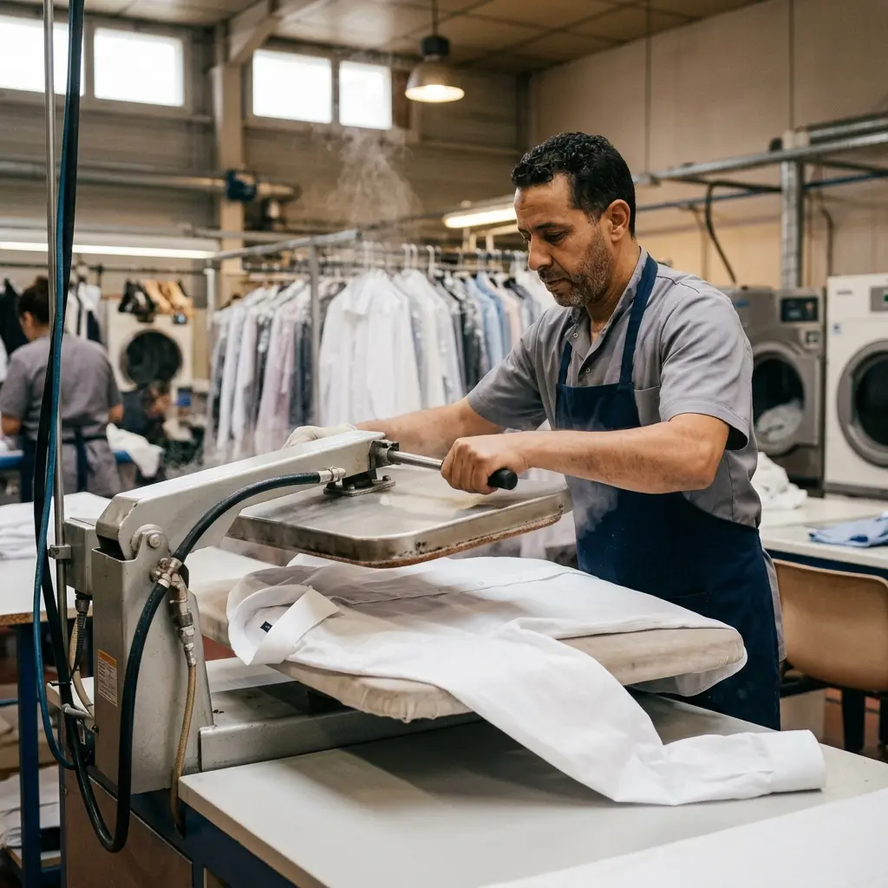

Hamare Latest Blog Posts
Dry cleaning, laundry aur fabric care se related helpful articles. Hindi-English mix mein aapki suvidha ke liye.

Dry Cleaning aur Laundry Me Difference Kya Hai?
Dry cleaning aur laundry dono alag processes hain. Janiye kab dry cleaning aur kab laundry chahiye hoti hai.
Read More
Suit Dry Cleaning Kitne Time Me Hoti Hai?
Suit dry cleaning ka time kya hota hai? Standard aur express service ka time aur price ke baare mein jaaniye.
Read More
Saree Dry Cleaning Ka Price Kitna Hota Hai?
Silk, bridal, cotton saree dry cleaning price. Kitna lagta hai aur kya included hai, jaaniye poori jankari.
Read More
White Clothes Ko Yellow Hone Se Kaise Bachaye?
Safed kapde time ke saath yellow ho jaate hain. Janiye tips jo aapke white clothes ko naya rakhein.
Read More
Winter Jacket Dry Cleaning Kaise Hoti Hai?
Winter jackets aur coats ki professional dry cleaning kaise hoti hai. Process aur benefits ke baare mein jaaniye.
Read More
Best Dry Cleaner Choose Kaise Kare?
Sahi dry cleaner choose karna important hai. Kya check karna chahiye aur kya avoid karna chahiye – poori guide.
Read More
Kapdo Ki Life Badhane Ke Easy Tips
Simple tips jo aapke kapdon ki life badha sakte hain. Sahi washing, storage aur care ke baare mein jaaniye.
Read More